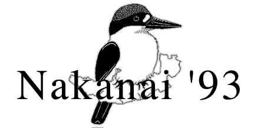

©1994 Nakanai '93 Expedition
All photographs ©Jonathan Clay
A large selection of slides are available for reproduction Edited by: Jonathan Clay, 3 Hartington Place, Carlisle. CA1 1HL
Last Updated 2 June 1996